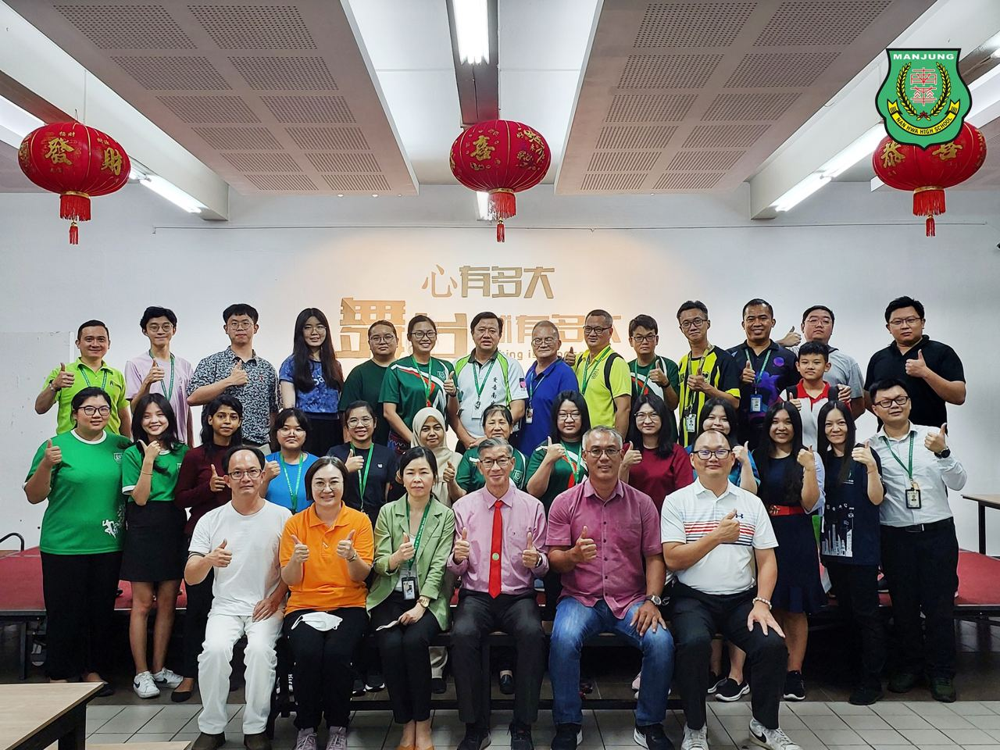
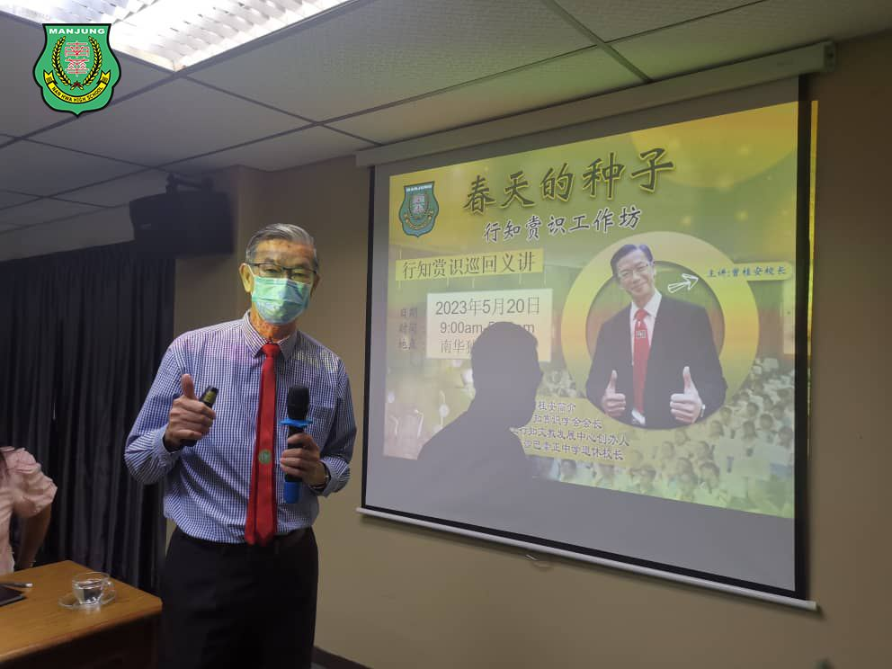
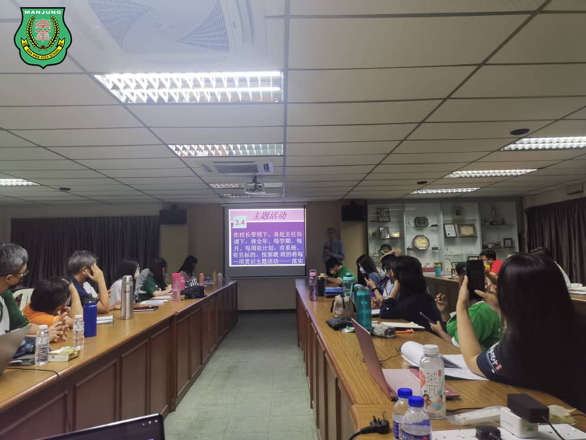
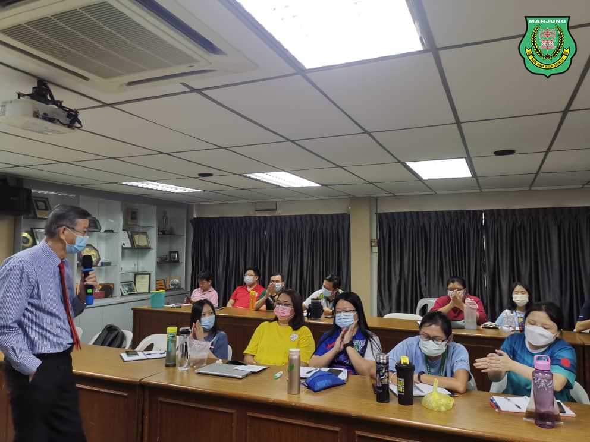
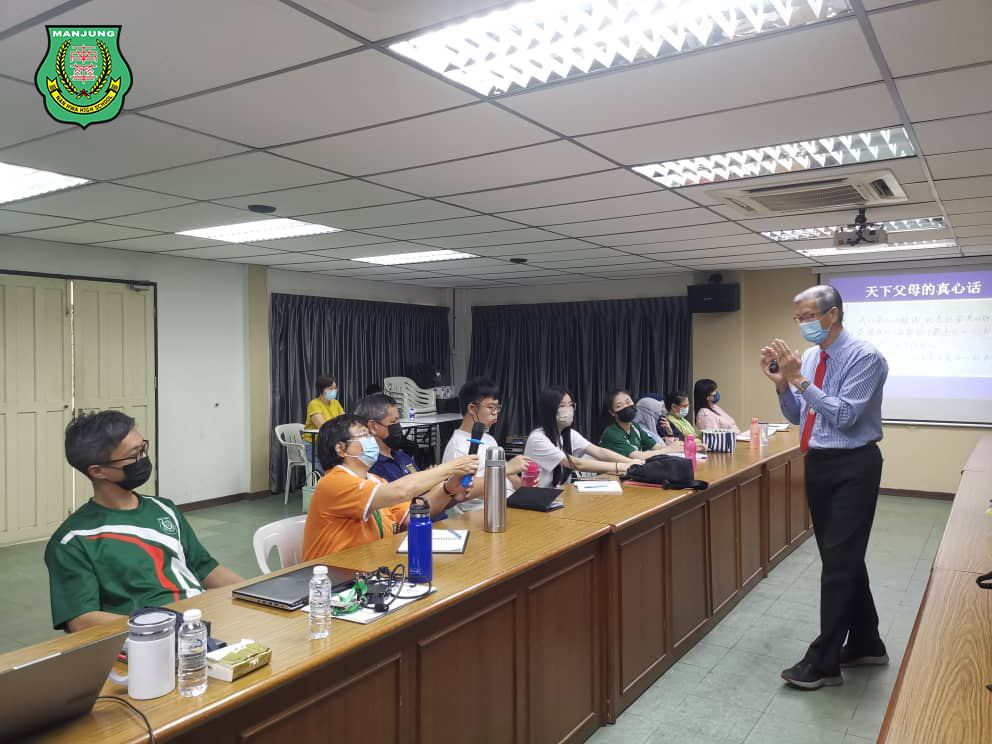
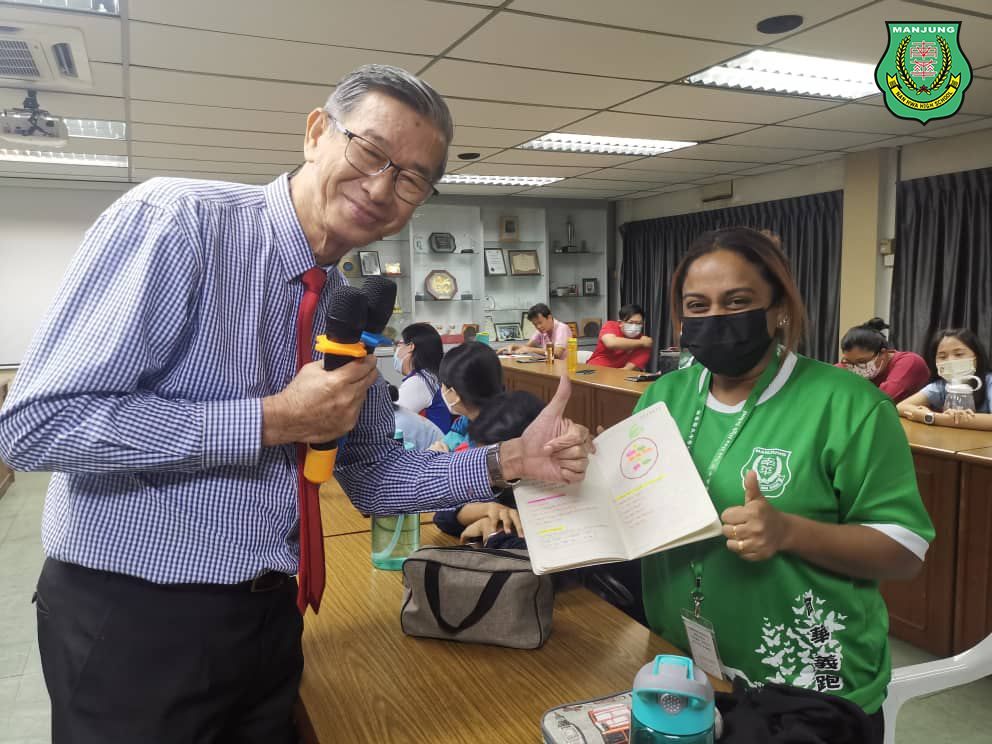

播下行知赏识教育的种子
播下行知赏识教育的种子
南华独中开出真爱的大树
由霹雳董联会主办、国际行知赏识教育学会会长、马来西亚行知文化发展中心创办人、以及沙巴崇正中学退休校长，曾桂安校长主讲的“春天的种子” 教师工作坊日前于南华独中圆满结束，种下一颗颗“赏识孩子”的正能量种子，以期来日在老师心中生根发芽，长成参天大树，荫翳与陪伴孩子快乐成长。
“心态一正，方法无限；心态一负，问题无限。”南华独中教师经曾桂安校长点拨以后，无不纷纷对赏识教育有了更深刻的了解，并且习得了要以真心“先坚信孩子行，后看到孩子行；无条件地看得起孩子，播下行知赏识的种子”。
在工作坊期间，曾桂安校长例举大量的案例佐证行知赏识教育的可行性与科学性，并传授打开孩子心门金钥匙的六大原则：尊重、信任、理解、激励、提醒与包容。此外，教学中不忘要勤练六个基本功：多看孩子的优点少看缺点、主动积极、好心态、学会反映、停止生气与放弃抱怨，再由行政老师分工带领老师一起学习与坚持修炼。
老师们在参与工作坊后表示：“最大收获是能够了解到更多正面的“真爱”的案例和研究，分析和感悟打压式和鞭策的教学手法无疑是会造就出一个失去信心和会唤醒一个不愿学习的孩子” 、“工作坊结束后，第一件想做的事是马上跟身边人表达爱，让他们感受到被关爱”、“如果我能够在教学上能够实践赏识教育而有学生受惠，那是学生的福气，也是我的福气”。
#行知赏识教育 #春天的种子 #曾桂安校长
#南华独中 #曼绒 #实兆远





